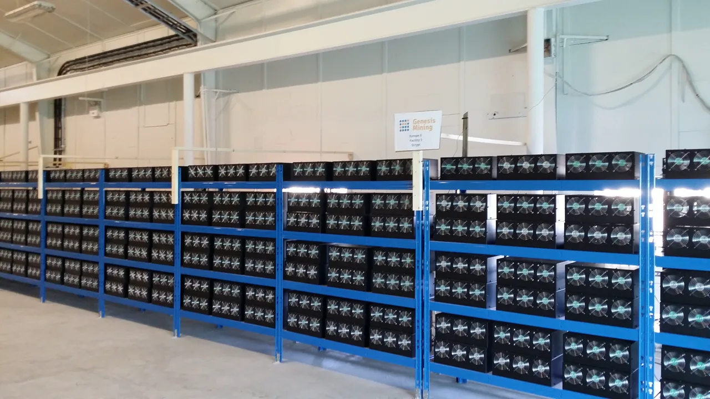

아메리칸 비트코인 ABTC를 볼 때 가장 먼저 떠오르는 숫자는 비트코인 보유량입니다. 2026년 1분기 말 기준 회사는 7,021 BTC를 보유했고, 이 가운데 3,090 BTC는 채굴기 구매와 관련해 Bitmain 쪽에 담보 또는 구매 관련 형태로 묶여 있었습니다. 보유량만 보면 아주 선명한 이야기처럼 보입니다. 하지만 주주에게 더 중요한 질문은 “회사 금고에 비트코인이 얼마나 있나”보다 “내 주식 한 주가 시간이 갈수록 더 많은 비트코인을 대표하게 되는가”입니다.
ABTC의 특징은 채굴과 비트코인 축적을 한 회사 안에 묶었다는 점입니다. 일반 비트코인 채굴주는 해시레이트와 전력 비용으로 평가받고, 스트래티지 같은 비트코인 보유 회사는 자본시장 조달 능력과 보유량 증가 속도로 평가받습니다. ABTC는 두 세계를 동시에 가져가려 합니다. 그래서 숫자를 보는 순서도 달라져야 합니다. 비트코인 가격이 오르면 당연히 보유 자산 가치는 커질 수 있지만, 그 과정에서 주식 수가 더 빨리 늘거나 채굴 원가가 시장 가격에 가까워지면 주주 몫의 증가는 생각보다 약해질 수 있습니다.
2026년 1분기 실적에서 ABTC는 817 BTC를 채굴했고, 전략적 매입으로 약 803 BTC를 추가했습니다. 같은 기간 보유량은 2025년 말 약 5,401 BTC에서 7,021 BTC로 늘었습니다. 회사가 강조한 더 흥미로운 지표는 주당 사토시입니다. 2025년 말 약 554 사토시에서 2026년 1분기 말 약 663 사토시로 약 20% 증가했습니다. 이 지표가 바로 ABTC를 읽는 첫 번째 렌즈입니다. 총 보유량이 아니라 주주 한 명이 들고 있는 경제적 몫이 늘고 있는지를 보여주기 때문입니다.
보유량보다 주당 비트코인이 먼저입니다

주당 사토시는 조금 낯설지만, ABTC에는 가장 실용적인 지표입니다. 회사가 비트코인을 30% 더 많이 갖게 되었더라도 같은 기간 주식 수가 40% 늘었다면 기존 주주의 몫은 줄어듭니다. 반대로 보유량 증가율이 주식 수 증가율보다 높으면 한 주가 대표하는 비트코인 양은 늘어납니다. ABTC가 1분기에 보유량 30% 증가와 주식 수 9% 증가를 함께 공개한 이유도 여기에 있습니다. 투자자는 이 조합을 매 분기 확인해야 합니다.
이 지표는 비트코인 가격 상승기에는 특히 중요합니다. 가격이 오르면 회사는 자본시장에서 주식을 발행해 더 많은 비트코인을 사거나 채굴 장비를 늘릴 유혹을 받습니다. 그 자체가 나쁘다는 뜻은 아닙니다. 새 자본을 투입해 한 주당 비트코인 양을 더 빠르게 늘릴 수 있다면 주주에게 유리할 수 있습니다. 문제는 발행 가격, 채굴기 구매 조건, 전력 계약, 담보 구조가 나쁘면 총 보유량은 늘어도 주주 몫은 희석될 수 있다는 점입니다.
그래서 ABTC 글을 읽을 때는 “몇 개의 비트코인을 보유했다”는 문장 뒤에 “그 비트코인이 한 주당 얼마나 늘었는가”를 붙여야 합니다. 현재 663 사토시라는 숫자는 출발점입니다. 다음 분기에도 이 숫자가 늘어나는지, 늘어난다면 채굴로 늘었는지, 매입으로 늘었는지, 주식 발행을 동반했는지를 나눠 봐야 합니다. ABTC가 정말 좋은 비트코인 축적 플랫폼인지 여부는 이 작은 숫자가 생각보다 냉정하게 보여줍니다.
채굴 원가는 해시레이트보다 오래 남습니다
관련 영상
아메리칸 비트코인 ABTC 기업 분석을 다룬 한국어 롱폼 영상
채굴주는 해시레이트가 커질수록 멋져 보입니다. ABTC도 2026년 1분기에 약 11,298대의 차세대 채굴기를 구매했고, 3.05 EH/s의 용량을 더했습니다. 회사는 1분기 말 총 보유 채굴기 약 89,242대, 총 보유 용량 약 28.1 EH/s를 제시했습니다. Drumheller 현장 채굴기 가동이 4월 22일 완료되면서 운영 중인 채굴기는 약 58,999대, 운영 해시레이트는 약 25.0 EH/s로 설명됐습니다. 규모의 메시지는 분명합니다.
하지만 주주가 더 오래 붙잡아야 할 숫자는 해시레이트보다 채굴 원가입니다. ABTC는 2026년 1분기 비트코인 1개를 채굴하는 비용이 약 3만6,200달러였고, 전 분기 약 4만6,900달러보다 약 23% 낮아졌다고 밝혔습니다. 같은 기간 비트코인 가격이 전 분기 대비 약 22% 하락했는데도 채굴 총마진을 약 52%로 유지했다는 점은 의미가 있습니다. 해시레이트가 커져도 전력 단가와 장비 효율이 따라오지 않으면 비트코인 가격 하락기에 마진은 빠르게 얇아집니다.
ABTC의 채굴 원가가 낮아진 배경은 생산량 증가, 고정비 분산, 에너지 가격 관리입니다. 투자자는 이 세 가지가 반복 가능한지 확인해야 합니다. 생산량 증가는 네트워크 난이도 상승과 경쟁 채굴기 증설에 따라 둔화될 수 있습니다. 고정비 분산은 설비가 높은 가동률을 유지할 때만 좋습니다. 에너지 가격은 계약 조건, 지역 전력망, 피크 시간 비용에 따라 바뀝니다. 즉 3만6,200달러라는 숫자는 성과이지만, 영구적인 방어선은 아닙니다.
ABTC가 매력적인 회사가 되려면 “비트코인을 많이 보유한 채굴주”가 아니라 “시장 가격보다 충분히 낮은 비용으로 비트코인을 계속 축적하는 회사”가 되어야 합니다. 그 차이는 큽니다. 전자는 비트코인 가격 상승에 기대는 구조이고, 후자는 가격 변동 속에서도 주당 비트코인을 늘릴 여지가 있습니다. 앞으로 실적에서 원가가 다시 4만달러 후반으로 올라가는지, 아니면 새 채굴기 투입 후에도 3만달러대 중반을 유지하는지가 핵심입니다.
Hut 8 관계는 장점이자 확인 변수입니다
ABTC는 독립된 이름을 달고 있지만 출발점은 Hut 8과 깊게 연결되어 있습니다. SEC 10-Q에 따르면 Hut 8은 2025년 3월 American Data Centers에 사실상 ASIC 채굴기 사업을 넘기고, 그 대가로 발행 후 80%의 의결권과 지분을 갖는 Class B 주식을 받았습니다. 이후 회사는 American Bitcoin으로 이름을 바꿨고, 2025년 9월 Gryphon Digital Mining과의 거래를 통해 현재의 상장사 구조가 됐습니다. 이 구조를 이해하지 못하면 ABTC를 단순 신규 채굴주로 오해하기 쉽습니다.
Hut 8 관계의 장점은 실행 속도입니다. ABTC는 Hut 8의 데이터센터, 에너지 접근성, 운영 인력, 공동 서비스, 코로케이션 계약을 활용합니다. 새 회사가 처음부터 전력 계약과 채굴 시설을 만들 필요가 줄어듭니다. 채굴 산업에서 시설 확보와 전력 비용은 진입장벽입니다. 그런 점에서 Hut 8은 ABTC의 출발선을 앞으로 당겨주는 파트너입니다.
동시에 이 관계는 투자자가 꼭 확인해야 할 변수입니다. 2026년 1분기 말 ABTC는 Hut 8에 약 6,580만달러를 부담하고 있었고, 이 가운데 일부는 Hut 8에 대한 미지급금과 운영 리스 부채로 표시됐습니다. 회사의 일상 운영과 인프라 이용이 Hut 8에 기대는 구조라면, 비용 조건과 이해상충 가능성도 같이 봐야 합니다. 좋은 파트너십은 속도를 주지만, 독립 주주 입장에서는 가격이 공정한지도 확인해야 합니다.
이 지점에서 ABTC와 Hut 8의 주주 이해관계가 항상 완전히 같다고 단정하면 안 됩니다. Hut 8은 인프라와 서비스 제공자로서 수익을 얻고, ABTC는 그 인프라를 이용해 비트코인을 채굴하고 축적합니다. 둘 다 잘될 수 있지만 계약 조건이 어떤지, 비용이 어떻게 배분되는지, 장비 담보와 리스 부담이 어느 쪽에 얼마나 남는지는 분기마다 확인해야 합니다. ABTC를 볼 때 HUT를 함께 보는 이유가 바로 여기에 있습니다.
희석과 비트코인 가격을 같은 표에 놓아야 합니다
ABTC의 2026년 1분기 매출은 6,211만8천달러였고, 순손실은 8,179만2천달러였습니다. 순손실에는 비트코인 공정가치 변동에 따른 비현금 손실이 크게 반영됐습니다. 회사는 이를 제외한 기초 사업의 성격을 강조하지만, 투자자는 GAAP 손익도 함께 봐야 합니다. 비트코인 가격이 떨어지면 손익계산서가 흔들리고, 보유 자산 가치와 담보 여력도 같이 흔들릴 수 있습니다.
또 하나의 축은 희석입니다. 회사가 비트코인을 더 사거나 채굴기를 더 들여오려면 현금, 비트코인 담보, 부채, 주식 발행 중 하나를 써야 합니다. 비트코인 가격이 높을 때 주식을 발행하면 덜 희석적으로 보일 수 있지만, 주가가 낮을 때 같은 전략을 쓰면 기존 주주에게 부담이 커집니다. ABTC가 주당 사토시를 강조하는 이유는 이 희석 리스크를 숫자로 관리하겠다는 메시지이기도 합니다.
그래서 ABTC 주주는 네 가지 표를 옆에 놓고 봐야 합니다. 첫째, 총 BTC 보유량입니다. 둘째, 주당 사토시입니다. 셋째, 채굴 원가와 총마진입니다. 넷째, 주식 수와 부채·담보 구조입니다. 이 네 가지가 같은 방향으로 좋아지면 ABTC는 비트코인 가격 상승기에 강한 레버리지 구조를 가질 수 있습니다. 반대로 보유량은 늘지만 주당 사토시가 정체되고, 채굴 원가가 오르며, 담보 부담이 커지면 총 보유량만으로는 주주 가치를 설명하기 어려워집니다.
결론은 명확합니다. ABTC는 비트코인 가격에만 반응하는 투기적 채굴주로 보기에는 구조가 더 복잡합니다. 동시에 비트코인 보유 회사라고만 보기에도 채굴 원가와 전력·장비 계약의 영향이 큽니다. 지금 독자가 가장 궁금해해야 할 질문은 “ABTC가 얼마나 많은 비트코인을 갖고 있나”가 아닙니다. “그 비트코인을 얼마나 싸게 늘리고, 그 증가분이 한 주당 몫으로 남는가”입니다. 다음 분기에도 주당 사토시, 채굴 원가, Hut 8 관련 비용, 담보 BTC, 주식 수가 함께 좋아진다면 ABTC의 이야기는 더 단단해질 수 있습니다.